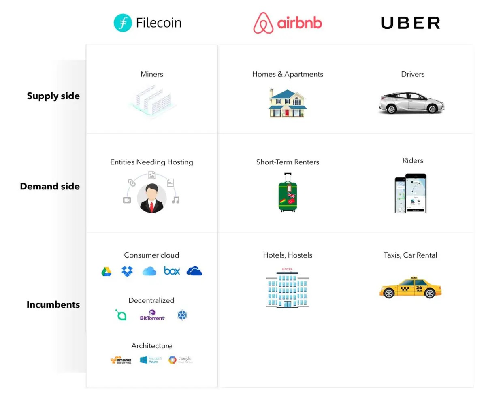

WEB3.0应用
客户服务器架构已经不合时宜
自从有网络开始，我们似乎就在与各种各样的服务器打交道，前后经历了 C/S （Client/Server）架构，B/S（Bowser/Server）架构，无论哪一种，其中最为关键的就是服务器（Server）。这个Server就是中心，所有的数据和交易都在中心进行，这就是巨头赖以生存和获取巨额利润的来源。
这一切要变革，就要打破这个架构，去掉服务器，去掉中心控制，去掉数据的独裁，实现数据的民主化，实现我的数据我做主。
所幸的是，梦想的实现现在不仅成为可能，而且成为必须。网络必然将从中心化，走向多中心化，再逐步走向去中心化。
IPFS星际文件系统这一底层协议的项目大全。
IPFS全称InterPlanetary File System，中文名：星际文件系统，是一个旨在创建持久且分布式存储和共享文件的网络传输协议。
它是一种内容可寻址的对等超媒体分发协议。在IPFS网络中的节点将构成一个分布式文件系统。它是一个开放源代码项目，自2014年开始由Protocol Labs （协议实验室）在开源社区的帮助下发展。其最初由Juan Benet设计。
IPFS是点对点的超媒体协议，可以让网络更快、更安全、更开放。它是一个面向全球的、点对点的分布式版本文件系统，试图将所有具有相同文件系统的计算设备连接在一起。
IPFS区别于HTTP痛点的特质
互联网信息永久存储
IPFS像是一个分布式存储网络（类似于SIA），任何存储在系统里的资源，包括文字、图片、声音、视频，以及网站代码，通过IPFS进行哈希运算后，都会生成唯一的地址。今后，你只要通过这个地址就可以打开它们。并且这个地址是可以被分享的。
而由于加密算法的保护，该地址具备了不可篡改和删除的特性（在某种意义上，如果破解密码还是有可能被篡改或删除，但概率极低）。所以，一旦数据存储在IPFS中，它就会是永久性的。比如我们经常会遇到的某个资源删除无法访问的问题。
这种情况，在IPFS上就不会发生。即便是把该站点撤销，只要存储该站点信息的网络依然存在，该网页就可以被正常访问。存储站点的分布式网络越多，它的可靠性也就越强。
与SIA不同的是，IPFS存储的一般是公共信息，普通大众都可以获得的。有一种说法认为，如果IPFS完全取代HTTP，那么此后，人类历史将会被永久保存，且不会被篡改。
IPFS工作原理

每个文件及其中的所有块都被赋予一个称为加密散列的唯一指纹。
IPFS通过网络删除重复具有相同哈希值的文件，通过计算是可以判断哪些文件是冗余重复的。并跟踪每个文件的版本历史记录。
每个网络节点只存储它感兴趣的内容，以及一些索引信息，有助于弄清楚谁在存储什么。
查找文件时，你通过文件的哈希值就可以在网络查找到储存改文件的节点，找到想要的文件。
使用称为IPNS（去中心化命名系统），每个文件都可以被协作命名为易读的名字。通过搜索，就能很容易地找到想要查看的文件。
从IPFS的介绍可以看出， IPFS设想的是让所有的网络终端节点不仅仅只充当 Browser或Client的角色，其实人人都可以作为这个网络的运营者，人人都可以是服务器。
IPFS应用场景
